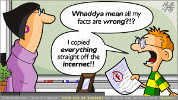
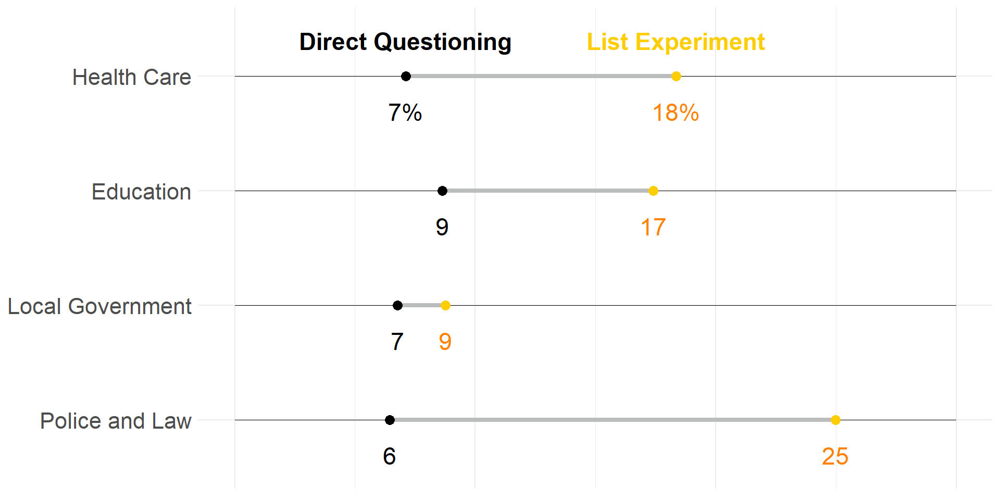
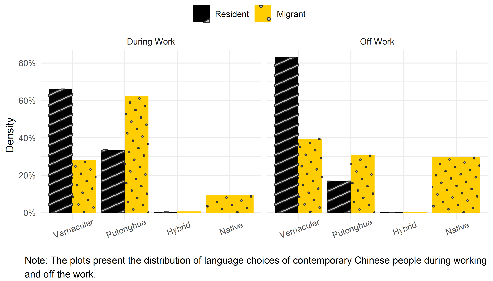
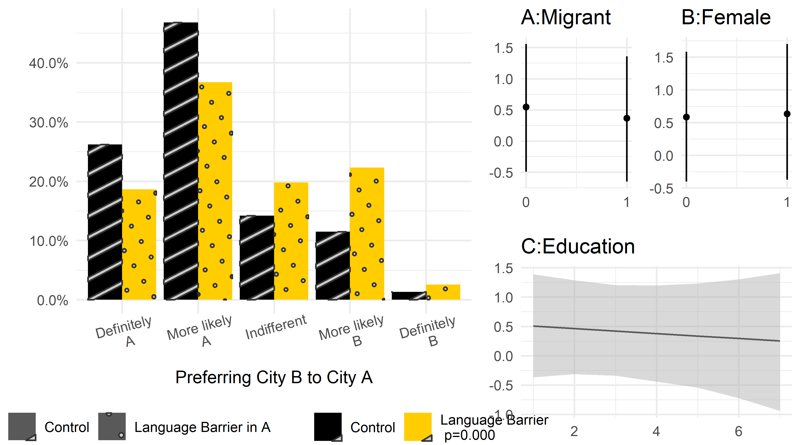
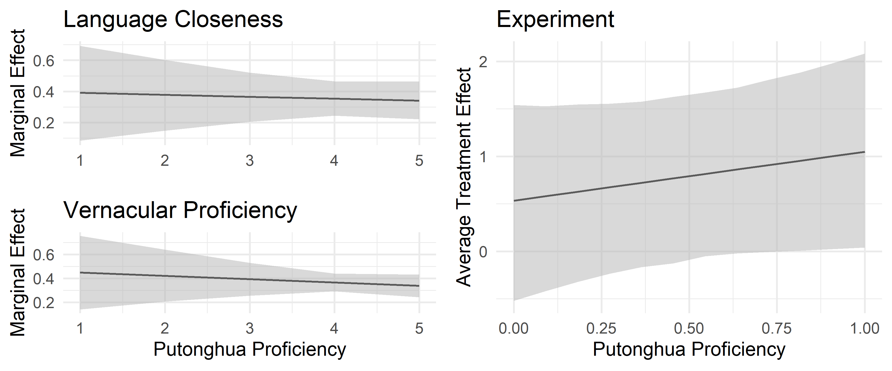
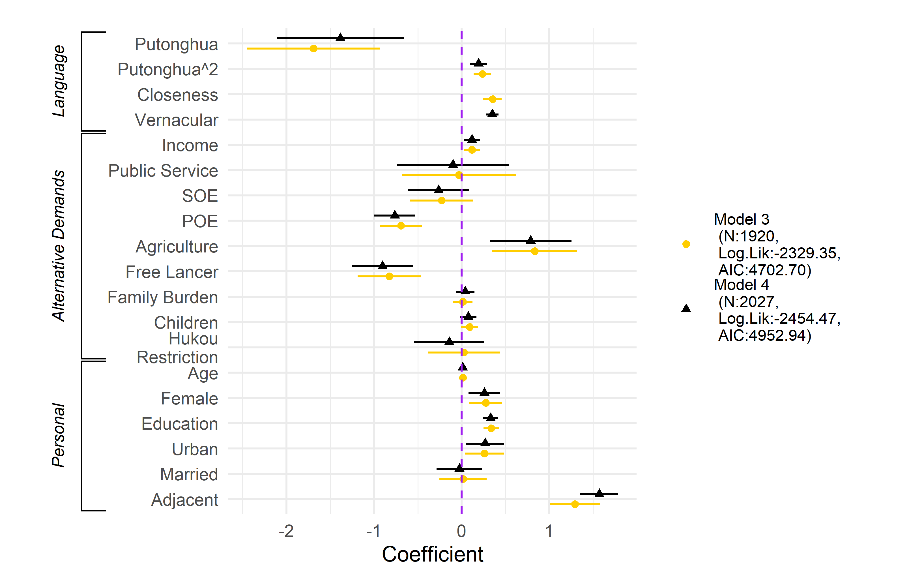
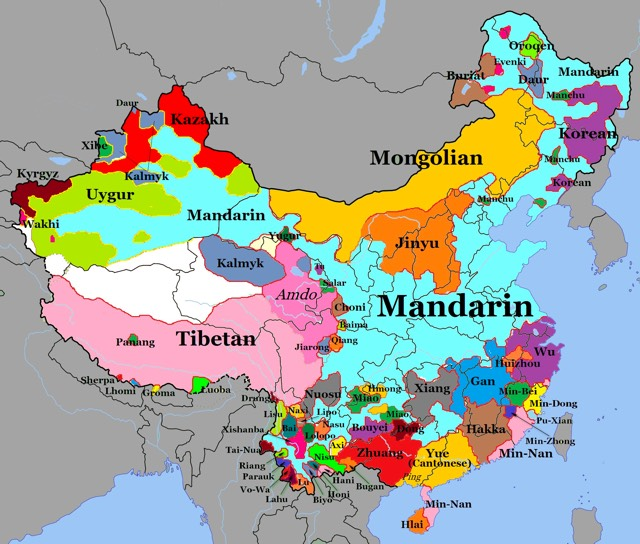
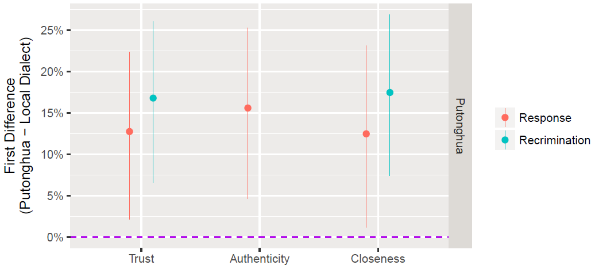

以科学方法探知民心
社会调查原则、难点和一些突破
清华大学政治学系
个人简介
个人经历
- 政治科学博士（University of Iowa)
- 信息学（Graduated Certificate in Informatics)
- 清华大学计算社会科学平台(副主任)
- 清华数据与治理中心(副主任)
- “Learning R with Dr. Hu and His Friends”
研究特点：学科交叉
- W. 计量与数据科学
- 实验室和调查实验
- 潜变量分析、网络分析、空间分析
- 文本大数据分析、数据可视化等
研究领域
- W. 心理学
- 记忆与政治（参与、公卫）
- 政治传播（官媒、青年）
- 身份认同（城乡、香港、司法）
- W. 经济学
- 宏观经济 → 微观认知 → 中观行为公共政策
- 不平等感知
- W. 语言学
- 语言的政治意义
- 语言政策的政治影响
概要
- 研究社会的科学性原则
- 社会调查的挑战与应战
- 调查方法的质疑与突破
- 社会期许与政治正确 (案例1)
- 数据整合与因果判断 (案例2)
- 超越社会调查 (案例3)
研究社会·科学性原则
探知民心与社会科学
人心是最大的政治……社会主义核心价值观是凝聚人心、汇聚民力的强大力量……中国共产党领导人民打江山、守江山，守的是人民的心。—— 习近平 (2022)
我们必须坚持解放思想、实事求是、与时俱进、求真务实，一切从实际出发，着眼解决新时代改革开放和社会主义现代化建设的实际问题，不断回答中国之问、世界之问、人民之问、时代之问，作出符合中国实际和时代要求的正确回答，得出符合客观规律的科学认识，形成与时俱进的理论成果，更好指导中国实践。—— 习近平 (2022)
党要适应改革开放和社会主义现代化建设的要求，坚持科学执政、民主执政、依法执政……党必须实行民主的科学的决策，制定和执行正确的路线、方针、政策……—— 党章 (2022)
如何实现？
科学原则
无限趋近真相 → 普遍规律 → 可被证伪
理论
- 逻辑自洽
- 现实可验
数据
- 有效
- 具有代表性
- 充分
- 具有多样性
分析
- 恰当且一致
- 理论推断 →
方法论 →
方法与测量 →
检验与推论
- 理论推断 →
研究科学性的度量

效度(Validity): 推断与真实的接近程度
- 与研究目的的接近程度
- 与广泛人群的接近程度
- 与现实世界的真实程度
研究效度的认知框架
- 内部效度: 目标人群
- 建构性：是否能合理且有针对性地实证目标理论
- 因果性：可识别性（Identification）
- 统计性: 核心因、果因素间具有显著且稳定的统计关系
- 外部效度: 超越目标人群
- 目标人群不一定就是总体人群
- 生态效度: 与目标人群在非实验环境中行为决策的一致性
- 并不关注实证推断与真实规律的联系，而考察的是研究环境与实际环境的相似程度
Note
- 生态效度属于内部效度而非外部效度
- 信度属于内部效度而非平行概念
- 效度是个整体概念，不能孤立看待
研究目标
高内部效度，高外部效度，高生态效度
- 理论的科学性
- 实证的程序性
- 探索（Exploration)
- 描述（Description）
- 解释（Explanation）
- 预测（Prediction）
不用一次性完成
社会调查方法·挑战与应战
社会调查方法如何协助科学研究
内部效度
- 问题直接来自理论
- 多维度理解问题
- 研究抽象概念
- 过程可追溯
外部效度
- 样本特点明确
- 抽样过程清晰
- 长时间、跨区域
生态效度
- 自然环境下答题
- 熟悉语境下反馈
社会调查方法面临的挑战
- 质性研究
- 深度 vs. 广度
- 应战：参与式分析
- 实验
- 代表性 vs. 因果性
- 应战：吸纳
- 大数据
- 大数据迷思 -“每日上亿条”
- “全网数据”
- “《人民日报》所有……文章”
- 应战
- 大数据不是全数据
- 全数据不一定是好数据
- 大数据迷思 -“每日上亿条”
社会调查方法·质疑与突破
社会调查方法面临的质疑
挑战
- 质性研究 ✓
- 实验 ✓
- 大数据 ✓
质疑
- 稳定性（← 自然科学）
- 代表性（← 政策需求）
- 真实性（← 社会心理）
- 全面性（← 研究方法）
- 因果性（← 社科前沿）
- 可比性（← 研究视野）
稳定性与代表性
本质是数据手机问题：从一大堆到一小撮 ⇒ 代表性
简单随机抽样
- SHA算法和MD5
- 计算机随机数
复杂抽样
- 设计
- 配额（quota）
- 分组（clustering）
- 分层（stratification）
- 矫正
- 有限总体校正（finite population corrections, FPC）
- 非均等权重（unequal weights）
网络抽样
- 网民研究
- 等效复杂抽样法（在研）
复杂抽样


局限：
- Stratification → 层间方差不齐;
- Clustering → 群组间方差不齐，群组内不独立。
解法：
Post-collection correction → 把权重纳入分析
真实性
Danger
社会期许与政治正确: 被调查者在特定社会政治压力下的不配合。
解法：敏感性问题技术（Sensitive question techniques)
- Randomized response technique
- Endorsement experiment
- List experiment
控制组
- The radio audience is very small in nowadays society.
- I doubt about the audience rate of the Spring Gala. There shouldn’t be that many people still watching it.
- The real name registration on Weibo does not affect me much.
- All the newspapers published in the mainland China are consistent with People’s Daily
实验组
- The radio audience is very small in nowadays society.
- I doubt about the audience rate of the Spring Gala. There shouldn’t be that many people still watching it.
- The real name registration on Weibo does not affect me much.
- All the newspapers published in the mainland China are consistent with People’s Daily
- The reports in Xinwen Lianbo is credible.
应用举例
- Goal:
- Unboxing the grassroots bribery of China
- Underestimated
- ⇒ Challenge for the next stage of anti-corruption campaign
- Unboxing the grassroots bribery of China
- Method
- National survey + list experiments
Corruption and Anti-Corruption in China
- Waves of corruption cracking-down
- Paths to report corruptions online and offline
- Daily updated reports (http://www.ccdi.gov.cn/)
- Tigers and flies
Still a missing and fatal angle of corruption left
Grassroots Bribery
Market reform + anti-corruption campaigns → Grassroots bribery ↓
vs
Bribery is rational + institutional role → Grassroots bribery ↑
⇓
They’ll do it, but they .red[won’t tell] you~ (H1)
Institutional
Near to the center, less likely to bribe (↓, H2) + Household registration + Work unit ownership type + Level of residency
Non-institutional
- Political mobilization: TV viewers (↓, H3)
- Culture: Guanxiology (interpersonal , ↑, H4)
- Social Economy: Long-term: Education (↓, H5.1); Short-term: Family income (↑, H5.2)
Controls
Gender, age, multilevel modeling (intercept varying at the county level), multiple imputations for the missing
Expose Grassroots Bribery in China
2018 China Grassroots Bribery Behavior Survey
2,581 respondents
Nationally representative
Public sector and grassroots bribery engagements
- Education (37%, 7.12%)
- Health care (54%, 8.62%)
- Local government offices (22%, 6.77%)
- Public security and law (17%, 6.44%)
Four list experiments (direct + indirect questions)
They’ll Do It, But They Won’t Tell You
Extending the Information from the Experiments
Frequency Weight based on the .red[average intention to hide] the true answers
\[\begin{align} W_i =& \sum I_i^{type}\cdot\frac{O^{type}}{t_i},\\ =& I_i^{health}\cdot\frac{O^{health}}{t_i} + I_i^{education}\cdot\frac{O^{education}}{t_i} +\\ &I_i^{local\ gove}\cdot\frac{O^{local\ gov}}{t_i} + I_i^{judicial}\cdot\frac{O^{judicial}}{t_i}, \end{align}\] where
\(I_i^{type}\): 0/1, whether i report;
\(O^{type}\): Experiment/direct;
\(t_i\): Type counts that i reports
Findings: Unsurprises and Surprises
- 47.65% (weighted)

When the Missing Angle Is Encovered
- How common
- A step further to uncover the reality
- Sources: Institutional + noninstitutional
- Where does anti-corruption go
- Focusing on the source of the problem
- Understanding the underlying logic
全面性
Danger
截面自报数据: 被调查者仅在单次调查中根据自身认识给出答案，主观性和孤立性
解法：数据整合与方法整合
- 定性方法 + 定量方法
- 小数据 + 大数据
- 社会调查 + 实验
应用举例
- Goals
- Migration in China: Research Puzzles
- An Explanation: Language Barrier
- What Can Government Do
- Methods
- National online survey + hypothetical experiment
Migration in China: Facts and Puzzles
- Migrants of China: > 385,000,000 (2021)
- No doubt migrating for jobs and better opportunities
(Massey et al., 1993, Zhang & Song 2003, Ha, Yi & Zhang 2009, Fitzgerald, Leblang & Teets 2014) - But is that all?

Puzzle
Similar economic development, unequal attraction

RQ1: Why here not there?
Potential answers
Why do people tend to move here rather than there?
- Institutional
- Hukou (Pizzi and Hu 2022)
- Sociological/cultural
- Language (Only internationally, Pieke 2004; Boyd & Cao 2009; Adserà & Pytliková 2015)
⇓
RQ2: The role of Language
Language Barrier: Potential Explanations
Language as ….


Hypothesis and Examination
H1: When migrants determent where to migrate or whether to remain where they are, they prefer the place with a weaker language barrier
- Data:
- China Labor Force Dynamics Survey (CLDS 2016)
- Nationally representative, > 2000 migrants
- Living Environment Satisfaction Survey of Chinese Residents (LESS 2018)
- Online quota, 50:50 migrants:nonmigrants
- China Labor Force Dynamics Survey (CLDS 2016)
Language Choice

Migrant’s Will
Outcome variable
Do you want to remain in the current location? (1–5, CLDS 2016)
Explanatory variable
- Language closeness
- Language-tree (Language Atlas of China 2015)
- Dialect points < clusters < subgroups < groups < super groups
(Available in theregioncodepackage)
- Vernacular proficiency
- Self report
Alternative Demands
- Economic factors:
- Satisfaction with income
- Satisfaction with occupation
- Family factors:
- Family burden: Parents + children / siblings
- Children: Num of kids
- Geographic factor:
- Hukou ↔︎ destination
- Demographic factors:
- Age, gender, education level, urban/rural difference, and marital status
Results
Staying ≠ Going
Situational experiment in LESS 2018:
Assuming you have a plan to leave from the city your hukou was registered, there are two available options: City A and B. The two cities are very similar. Both are in .blue[economically developed areas] and located at .blue[similar distances] to your hukou city. You don’t have any social relations to either of them. The difference is that you are expected to .blue[earn twice] as much in City A as in City B, while the .blue[average living cost] in A is also about 1. 5 times of the cost in B. Given these conditions, where do you prefer to move, A or B?
Treatment:
The vernacular in City B is .red[quite similar] to your mother tongue. You can make smooth communication there with no problem, while the vernacular of City A is very different from yours.
Result

What Can Govenrment Do
Can Language Policy Reducing Language Barriers & how?
Language policy/planning: Setting up the national communal language (NCL) and its relationship with other linguistic types.
- H2.1 (Harmonizing): Proficiency in the NCL (e.g, Putonghua) reduces the influence of vernacular language abilities on migration decision making.
- H2.1a Migrants with higher Putonghua proficiency are more likely to migrate to place with larger language distance than those with lower proficiency
- H2.1b For migrants with higher Putonghua proficiency, proficiency in the vernacular has less influence over migration destinations than for those with lower Putonghua proficiency.
- H2.2 (Bypassing): When migrants are equipped with communicative NCL proficiency, they are more likely to stay in a migration destination despite the concern of language barriers.
Empirical Test
- (Culturally) Harmonizing effect
- Interaction model: Whether higher Putonghua proficiency reducing the influence of vernacular (H2.1b)
- (Communicatively) Bypassing effect
- Quadratic model (H2.1a, H2.2)
Result: Haromonizing

Result: Bypassing

Conclusions
Findings:
The diversity of vernaculars in potential destinations still create .red[a barrier] for contemporary Chinese migrants.
There is no a national communal language reduces the language barrier to cultural assimilation.
- Merely a way to bypass vernacular language differences
Implications
- The public function of language policy beyond education
- Resilience of vernaculars: identity construction in modernization and urbanization
因果性
超越社会调查一些探索：实验室实验
调查实验的局限：
- 被试测试环境刺激
- 实验复杂性
解法：实验室实验
应用举例
Political Influences of Language Policy
- Language policy and language habits of Chinese citizens
- Influences on institutional-based political trust
- Influences on process-based political trust
- Influences on political beliefs
Process-based Trust
- Institutional-based vs. Process-based trust (Zucker 1986)
- Imagined vs. Engaged (Thomas 1998; Wang 2005)
- Support for the government and regime legitimacy (Tolbert and Mossberger 2006; Li 2004; Reisinger et al. 2017)
In China
- 7.19 million & Deep engagement


- Dialect/language Choice
Dialect Choice

Language Attitudes
- Speakers of different languages \(\leadsto\)Attitudes.
- A “turn-on” button

- A “turn-on” button
- Systematic (Gardner and Lambert 1972; Hiraga 2005)
- Influential (Kervel 2011; Dragojevic 2017)

Culture-Marker Theory

- Language marks culture.
- People prefer speakers from the same cultural communities.
- \(H_{Culture}\): People have more trust in .red[dialect]-speaking government representatives.
Authority-Marker Theory
Putonghua in China:
- “New” language
- Unique voice of the authority
\[Attitude_{gov} \leadsto Attitude_{rep}\]
- \(H_{Authority}\): People have more trust in .red[Putonghua]-speaking government representatives.
Adjusted Matched-Guise Experiment
Original Design

Adjusted Design

Evaluation
Internal Validity
- Statistical: (Results)
- Causal: Double-blind assignment + controls
- Constructive: Matched-guise + delicate measurements
- Techniques: Measurement of trust × 3
- Questions about each speaker respectively.
- General trust
- Emotional closeness
- Content authenticity
Measurement of General Trust
Trust game:
- Strength: Abstract trust \(\rightarrow\) money decision
- Process: Subjects have ten golden coins
- Play with the speaker
- 1-coin investment from subject = 3-coin profits of speaker
- Speaker decides how much to return
- Goal: maximize the own coins
Measurement of Emotional Closeness
- Direct question
- IOS

Measurement of Content Authenticity
- Authenticity: Do you believe what the speaker said?
- e.g., “Given there is one department in the recording actually responsible to the complaint, which department do you think it is, City Department of Property Management or Municipal Construction Committee?”
Ecological Validity:
- Compensation
- Scenarios-embedded: Scenario I. Shuffle Response
Earlier this month, a downstairs neighbor continually made loud noises in the apartment beneath the one in which one of your classmates lives. It had a serious effect on people’s lives there. To resolve this issue, the parent of your classmate called the public service hotline. The call was first transferred to the .magenta[City Department of Property Management] and then to the .magenta[Municipal Construction Committee]. Public servants responded to the call in the following recording.
Application in China
- 2016.12 – 2017.01
- 421 high school students
- Feasible
- Valid
- Implicatable
- External validity: Sichuan + Meizhou
Results: Improving Trust

Results II: Minimzing Distrust
What should a government care more?
- Trust \(\leadsto\) Super trust < Distrust \(\leadsto\) Trust

Substantively Significant?

Alternative Explanations?
Esteem of the Educated?
Respect for the Authority vs. Esteem of the Educated
Same experiments, same subjects, scenarios of ordinary people
- Response: cell phone selection (friends)
- Recrimination: traffic accident (private car drivers)